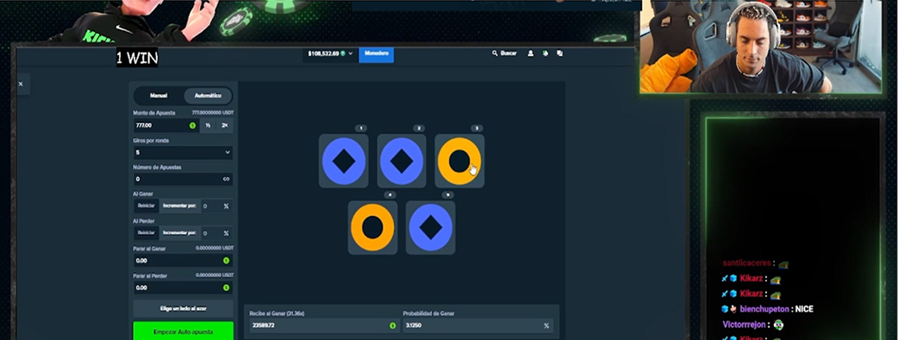

Pragmatic Play выпустил новый слот с максимальным выигрышем x10 000
RTP — один из ключевых показателей в слотах онлайн-казино. В этой статье разберёмся, что означает RTP, как он рассчитывается и стоит ли ориентироваться на него при выборе игры.
Иван Иванов 7 427 10 364 15

Компания Pragmatic Play объявила о выходе нового видеослота под названием Titan„s Forge. Игра уже доступна в ряде онлайн-казино и поддерживает режим демо. Слот выполнен в мифологической тематике и предлагает классическую сетку 5×6 с механикой Pay Anywhere.
Среди основных особенностей нового релиза:
- заявленный RTP — 96,48%
- высокая волатильность
- максимальный выигрыш — до x10 000 от ставки
- наличие функции покупки бонуса
В Titans Forge предусмотрен бонусный раунд с бесплатными вращениями. Во время бонуса на барабанах могут появляться случайные множители, увеличивающие итоговый выигрыш.
Также в игре доступна функция Bonus Buy, позволяющая мгновенно активировать бонусный режим за фиксированную ставку.
По информации от провайдера, слот уже добавляется в каталоги партнёрских онлайн-казино и в ближайшее время появится на большинстве популярных платформ.
Точная дата глобального релиза может отличаться в зависимости от региона и лицензии оператора.
Pragmatic Play остаётся одним из самых активных провайдеров на рынке онлайн-слотов и регулярно выпускает новые игры с повышенными множителями и бонусными механиками.

Последние новости

Другие новости
Читать больше новостей
Что такое RTP и как его читать
Объясняем, что означает RTP, почему это теоретический показатель и как использовать его при выборе игр.
10 364
20 мин.
Провайдеры и слоты

Волатильность в слотах: чем отличается высокая от низкой
Разбираем, как волатильность влияет на частоту выигрышей, размер выплат и стиль игры.
1064
7 мин.
Провайдеры и слоты

Почему одинаковые слоты ведут себя по-разному и от чего это на самом деле зависит
Рассказываем о случайности, игровых сессиях и распространённых мифах, которые мешают трезво оценивать результат.
164
20 мин.
Провайдеры и слоты